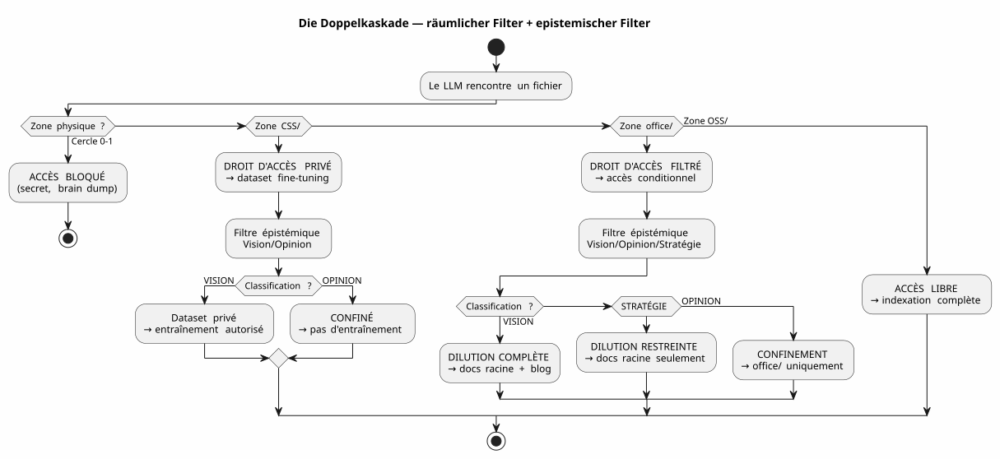
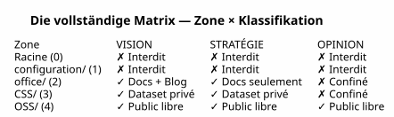

Die LLM-Governance-Matrix — Warum die Sicherheit Ihrer KI mit der Baumstruktur beginnt
Publié le 04 May 2026
- Das Problem: Prompt Engineering ist ein Sandschloss
- Meine Antwort: die 4×4-Matrix
- Wie das LLM diese Matrix konsumiert
- Implementierung : typisierte Gradle‑Aufgaben
- Warum ist es ein Manifest, nicht nur eine Spezifikation
- Die vollständige Kaskade — vom Brain-Dump zum Blog-Artikel
- Pro/Contra
- Fazit: Ordne deine Dateien an, nicht deine Prompts
- Referenzen
Für Monate habe ich die Agenten-Governance-Regeln gestapelt. Dateien EAGER, lazy Checklisten, sechsstufige Protokolle zur Sitzungsbeendigung. Und doch blieb eine Frage offen: Wie weiß das LLM, was es hat das Recht, mit einer Datei zu machen ?
Die Antwort ist nicht in einem Prompt. Sie befindet sich im Dateisystem.
Hier ist die Architektur-Spezifikation, die die Antwort nutzbar macht — la LLM-Governance-Matrix.
Das Problem: Prompt Engineering ist ein Sandschloss
Wenn man einer KI eine Datei gibt, gibt man ihr alles. Der Inhalt, ja — aber auch das Fehlen von Schutzmaßnahmen. Das LLM weiß nicht, ob diese Datei enthält ein Geheimnis, eine spekulative Meinung oder Closed-Source-Code. Er wird es indizieren, es zusammenfassen, es zitieren, es mit anderen Daten vermischen — und potenziell es zu veröffentlichen in einer öffentlichen Einbettung oder einer Benutzerantwort.
Die klassische Parade ist der Prompt:
"Tu es un assistant sécurisé. Ne divulgue jamais d'informations confidentielles.
Si tu détectes un secret, ignore-le. Si tu détectes une opinion, ne la répète pas."Dieser Prompt hat drei Probleme:
-
Es beruht auf dem guten Willen des LLMs. Ein Modell groß genug für
Das Lösen komplexer Fehler ist ausreichend groß, um eine Anweisung zu umgehen. von Sicherheit ertrunken in 200k Tokens Kontext.
-
Es ist kontextuell, nicht strukturell. Ändern Sie den Prompt, ändern Sie das LLM,
Wechsle die Sitzung — und die Regel verschwindet.
-
Es skaliert nicht. Jeder neue Dateityp, jede neue Ebene
Die Vertraulichkeit verlangt eine neue Klausel. Dein Prompt wird zu einem gesetzlicher Text, den niemand vollständig liest.
|
Die Sicherheit eines Systems darf niemals von einer Anweisung abhängen, die kann vergessen, umgehen oder nicht laden. Sie muss von einem abhängen eine Barriere, die man nicht überwinden kann, ohne es ausdrücklich zu wollen. |
Meine Antwort: die 4×4-Matrix
Die Lösung, die ich in meinem Workspace implementiert habe, ist eine Zone-Matrix × Zugangsrecht LLM. Sie verlangt nicht vom LLM, dass er vorsichtig ist. Sie macht. die strukturell unmögliche Unvorsichtigkeit
Failed to generate image: PlantUML preprocessing failed: [From <input> (line 10) ]
@startuml
skinparam backgroundColor #FEFEFE
skinparam defaultTextAlignment center
skinparam wrapWidth 220
title LLM-Governance-Matrix — Bereich × Zugriffsrecht
package "Arbeitsbereich" {
rectangle "WURZEL
(Kreis 0)
^^^^^
Syntax Error? (Assumed diagram type: activity)
@startuml
skinparam backgroundColor #FEFEFE
skinparam defaultTextAlignment center
skinparam wrapWidth 220
title LLM-Governance-Matrix — Bereich × Zugriffsrecht
package "Arbeitsbereich" {
rectangle "WURZEL
(Kreis 0)
━━━━━━
Brain dump
Freies Denken
[VERBOTEN LLM]" as Z0 #FFB3B3
rectangle "configuration/
(Kreis 1)
━━━━━━
Geheimnisse, Tokens
Private Infrastruktur
[VERBOTEN LLM]" as Z1 #FFB3B3
rectangle "office/
(Kreis 2)
━━━━━━
Redaktionelle Daten
Artikel, Layouts
[Gefilterte Vision]" as Z2 #FFF3B3
rectangle "foundry/private/
(Kreis 3)
━━━━━━
Code closed source
[DATASET PRIVAT]" as Z3 #B3D9FF
rectangle "foundry/public/\n(Kreis 3)\n━━━━━━\nOpen-Source-Code\nApache 2.0\n[FREIER ZUGANG]" as Z4 #B3FFB3
}
Z0 -[hidden]-> Z1
Z1 -[hidden]-> Z2
Z2 -[hidden]-> Z3
Z3 -[hidden]-> Z4
@enduml
Die fünf Zonen (Räumliche Dimension — DSGVO)
Jeder Bereich des Workspaces hat eine DSGVO-Stufe, die bestimmt, wo die Datei kann weitergeleitet werden :
Zone |
DSGVO-Niveau |
Inhalt |
Öffentliches RAG-Zugangsrecht |
Wurzel |
0 — Intim |
Brain-Dumps, LLM-Gespräche |
VERBOTEN— niemals indexiert |
|
1 — Eingeschränkter Eigentümer |
Geheimnisse, Tokens, API-Schlüssel |
VERBOTEN— nie indiziert |
|
2 — Beschränkt kooperativ |
Redaktionsdaten, Bildausschnitt, Schulungen |
GEFILTERT— Nur Vision |
|
3 — Bedingt geöffnet |
Code closed source, SaaS nicht öffentlich |
VERBOTEN— privates Dataset ausschließlich |
|
4 — Einheimisches Publikum |
Code Apache 2.0, veröffentlichte Plugins |
FREI— vollständige Indizierung |
Die Regel ist einfach: Der Dateipfad bestimmt, was das LLM damit tun kann. Keine Metadaten zu pflegen, kein Tag im Frontmatter hinzuzufügen Keine manuelle Klassifizierung bei jedem Commit. Die Datei ist in`OSS/? Er ist öffentlich. Er ist in`configuration/? Er ist unantastbar.
Die epistemologische Klassifizierung (Zweite Dimension)
Die räumliche Dimension sagt wo weiterleiten. Aber es gibt eine zweite Achse, senkrecht: quoi Router. Einige Dateien in einem autorisierten Bereich enthalten Informationen. die nicht so verdünnt werden sollten:

Das epistemologische Klassifizierungsraster, eingraviert in Regel 2bis meiner Governance Agent:
| Status | Definition | Signal LLM | Ziel | | VISION | stabilisierte Architektur, getestetes pattern | deklarative Sprache, Referenzen sessions/tests | vollständige Dilution + Blog | | STRATEGIE | Positionierung Business, Preisgestaltung | Marktvokabular, Wettbewerb | Nur Stammdokumente | | OPINION | Spekulation, nicht bestätigte Hypothese | Hypothetische Sprache, Intuition | Einschließung Kreis 0 |
Die Kombination der beiden Dimensionen — physischer Bereich × epistemische Klassifikation — bildet diekomplette Matrix[No output]

Wie das LLM diese Matrix konsumiert
Die Matrix ist kein Dokument, das das LLM liest. Beschränkung implizite kodiert im zusammengesetzten Kontextvektor (EPIC 9 — laufend der Implementierung)
Hier ist, was das LLM bei jeder Sitzung erhält:
VECTEUR COMPOSITE DE CONTEXTE
├── RAG pgvector → OSS/ + office/Vision
│ (similarité sémantique sur contenu publiable)
├── Knowledge Graph graphify → OSS/
│ (relations exactes entre artéfacts publics)
├── Knowledge Graph privé → CSS/
│ (relations entre code closed source — jamais exporté)
├── Métadonnées de zone → chaque fichier taggé par zone physique
│ (le LLM sait s'il est dans office/ ou OSS/)
└── Historique des décisions → WORKSPACE_VISION.adoc
(contexte temporel des arbitrages)Konkret, wenn das LLM mir sagt:
Je vais indexer le contenu de edster/ pour enrichir le knowledge graph...Die Zonenmetadaten antworten, noch bevor der LLM seinen Satz überhaupt beendet hat : edster/`ist in`CSS/, Stufe 3 →Zugriff auf den öffentlichen Knowledge Graph ist verboten. Der RAG sieht es nicht. Der Graph berührt es nicht. Die Benutzerantwort ne ihn zitiert nicht
|
Die räumliche Ontologie funktioniert wie eineUnix-Berechtigungfür die LLMs. Du verlangst nicht, dass ein Prozess vorsichtig mit`/etc/shadow`— Sie verweigern ihm den Lesezugriff. Gleiches Prinzip. |
Implementierung : typisierte Gradle‑Aufgaben
Die Matrix ist keine Philosophie. Es ist Code. Hier ist der Auftrag für die Aufgabe. Gradle, das es implementiert:
abstract class ZoneAwareIndexer @Inject constructor(
private val rootDir: DirectoryProperty,
private val configServer: ConfigServerProperty // → configuration/
) : DefaultTask() {
@Input
val zoneFilter: SetProperty<Zone> = project.objects.setProperty(Zone::class.java)
@OutputFile
val ragIndex: RegularFileProperty = project.objects.fileProperty()
@TaskAction
fun index() {
val allowedPaths = zoneFilter.get().flatMap { it.resolve(rootDir.get()) }
val forbiddenPaths = Zone.RESTRICTED.resolve(rootDir.get())
+ Zone.INTIMATE.resolve(rootDir.get())
// Le RAG ne voit jamais configuration/ ni la racine
// CSS/ alimente un index privé, pas celui-ci
// office/ est filtré par le classifieur Vision/Opinion
}
}
enum class Zone {
INTIMATE, // Cercle 0 — racine
RESTRICTED, // Cercle 1 — configuration/
EDITORIAL, // Cercle 2 — office/
CLOSED_SOURCE, // Cercle 3 — foundry/private/
OPEN_SOURCE // Cercle 3 — foundry/public/
}Die Aufgabe ist testbar. Sie können einen Test schreiben, der überprüft:
@Test
fun `le RAG n'indexe jamais configuration`() {
val index = ZoneAwareIndexer(rootDir, configServer)
index.zoneFilter.set(setOf(Zone.OPEN_SOURCE, Zone.EDITORIAL))
index.index()
assertThat(index.ragIndex).doesNotContain("configuration/")
}
@Test
fun `le code closed source est exclu du RAG public`() {
val index = ZoneAwareIndexer(rootDir, configServer)
index.zoneFilter.set(setOf(Zone.OPEN_SOURCE)) // OSS only
assertThat(index.ragIndex).doesNotContain("edster")
}380 Tests, 380 PASS. Wie bei plantuml-gradle — die Sicherheit wird getestet, nicht erhofft.
Warum ist es ein Manifest, nicht nur eine Spezifikation
Dieses Dokument ist eine Architekturspezifikation, weil es definiert:
-
desDimensionen(raumlich, epistemisch)
-
Desdeterministische Regeln(zone → Zugriffsrecht)
-
Un Aufgabenvertrag(Gradle typisiert, testbar)
-
EineReferenzimplementierung(mein Arbeitsbereich)
Aber es ist auch einoffensichtlichweil er Stellung zu einer Debatte bezieht größer : wie regelt man den Zugriff eines LLM auf Daten ?
Die Antwort der Industrie ist Prompt-Engineering + die Guardrails
die post-hoc-Klassifikatoren. Meine Antwort lautet: Sortieren Sie Ihre Dateien in die guten Unterlagen. Der Rest ist automatisch.
|
Dieses Manifest sagt nicht "die LLMs müssen ausgerichtet sein". Er sagt: "die Ausrichtung Ein LLM auf Ihren Sicherheitsregeln ist eine Folge Ihres Systems von Dateien, nicht von Ihrem Prompt. |
Die vollständige Kaskade — vom Brain-Dump zum Blog-Artikel
Um den vollständigen Zyklus zu veranschaulichen, hier ist, wie diese Matrixidee entstanden ist. und wurde verdünnt:
Session 4 mai 2026 — Feedback global du workspace
│
├→ Le LLM identifie : "la dualité public/privé est invisible"
│ → Classifié VISION (constat architectural vérifiable)
│
├→ PICTURE_ME_ROLLIN_MATRICE_4X4.adoc — STIMULUS (Cercle 0)
│ → Brain dump structuré, classification VISION confirmée
│
├→ DILUTION → WORKSPACE_AS_PRODUCT.adoc (section Matrice 4×4)
│ → La spec vit dans les documents racine
│
├→ DILUTION → WORKSPACE_ORGANIZATION.adoc (OSS/CSS)
│ → La granularisation est documentée
│
└→ ARTICLE 0117 (ce document) → cheroliv.com
→ La VISION est publiéeWas als eine Beobachtung in der Sitzung begann (« hey, das RAG weiß es nicht) dass edster closed source ist") ist zu einer Architektur-Spezifikation geworden Veröffentlicht in weniger als einer Sitzung. Das ist das Pattern STIMULUS im Einsatz.
Pro/Contra
| Dieser Ansatz (Räumliche Ontologie + Matrix) | Der Klassische Ansatz (Prompt + Leitplanken) |
|---|---|
Mechanik — das Dateisystem blockiert den Zugriff, nicht das LLM |
Deklarativ — der Prompt verlangt vom LLM, vorsichtig zu sein. |
Testable — Der Gradle-Aufgabenvertrag wird von 380+ Tests überprüft |
Nicht testbar — "Hat das LLM die Regel eingehalten?" ist eine offene Frage |
Unabhängig vom LLM — Wechsel das Modell, die Ordner bleiben. |
Abhängig vom LLM — jedes Modell interpretiert das Prompt anders |
Skalierbar — neuer Datentyp = neuer Ordner, keine Codeänderungen |
Non scalable — neuer Datentyp = neue Prompt-Klausel, neues Risiko einer Regression |
Auditable — das Dateisystem ist der Auditpfad |
Nicht prüfbar — Der Prompt hat kein Historie, kein Diff, kein Blame. |
Beschränkung : erfordert eine initiale Organisationsdisziplin |
Einschränkung : erfordert eine Disziplin im Verfassen von Prompts bei jeder Sitzung |
Fazit: Ordne deine Dateien an, nicht deine Prompts
Die LLM-Governance-Matrix, die ich gerade beschrieben habe, ist kein Produkt. Es ist eineArchitekturspezifikation— und das ist der Grund, warum sie ist veröffentlichbar
Was sie robust macht, ist dass sie dem LLM nichts verlangt. Sie nicht ihm Vertraut nicht. Sie beruht nicht auf ihrer Ausrichtung, ihrem Verständnis aus dem Französischen oder seiner guten Wille. Sie beruht auf dem Dateisystem — die tiefste, stabilste und am meisten getestete Schicht des gesamten Stacks.
Wenn ich meinem LLM sage: „Du kannst alles indexieren“OSS/, nichts in configuration/, et `office/`nur wenn es als Vision klassifiziert ist Das ist keine Anweisung. Es ist ein Filter — implementiert in Kotlin, Verifiziert durch 380 Tests, ausgeführt, bevor das LLM die Daten sieht.
Das ist der Unterschied zwischen jemandem zu sagen"schau nicht in diese Schublade und die abschließbare Schublade schließen. Der Governance-Agent, den ich seit baue Monate ist der Schlüssel. Die Matrix ist der Plan des Möbels.